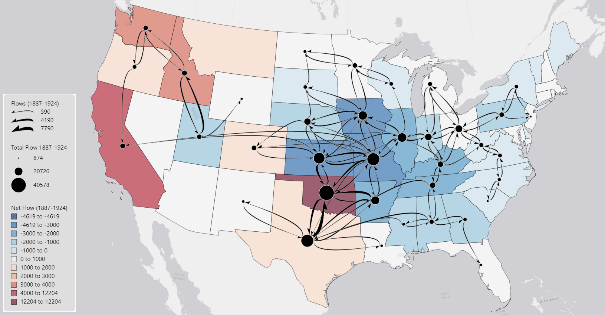

Family Migration from 1887 to 1924 across the United States

Download Project File
Flow Pattern Interpretation
1. Major Receiving and Sending Locations
Places that attract migrant families include states such as Oklahoma, California, Idaho, and Washington, with a few other western states having slightly higher flow input than output. As stated in Koylu, Tian, Windsor 2022, these particular states likely have higher migrant inflows during this time due to Westward expansion taking over and the search for oil which was prominent across these western states, especially California and Oklahoma. The states seeing the highest outflow of migrants include Kansas, Iowa, and Missouri with some other surrounding states such as Nebraska, Illinois, and Arkansas also having higher outflows than inflows. Much of the outflow from these states are to adjacent states indicating migrants are not traveling very far. The reason behind this higher outflow of migrants is likely to claim stakes on land for agricultural and cattle purposes as the Midwest offers ideal conditions for these practices. Although these states all have low migration efficiency indicating the populations are actively shrinking, much of the migration is to adjacent states and remains relatively contained to the Midwest and some Southern states.
2. General Direction of Flows
The general direction of flow is north and south throughout the Midwest and Southern states, which experience the highest traffic of migrant family movement. There is some east-west movement, but the larger pattern seems that families are moving up and down throughout this Midwest corridor. The largest number of migrant families reside in this region and are seen moving about freely to adjacent states. Much of the western states are experiencing population growth based off Migration Efficiency values but that is in part to it being widely uninhabited. Looking at flow paths, very few paths extend to western states yet those see the highest migration efficiency indicating population growth. During this time, much of the Midwest has communities and populations that have had time to build, so although migration efficiency is low and populations are ‘shrinking’, there are still plenty of people moving to adjacent states. The other reason for the majority of migrant families moving throughout this corridor is likely due to farming practices and creating settlements as westward expansion and a growing agriculture industry were becoming prominent during this time. Agricultural practices are needed to support large-scale communities, and the Midwest offers open land and healthy soil which is great for farming. The overall terrain is relatively flat as well, with no mountain ranges obstructing travel paths, once again making it fairly easy to move about this area.
3. Flow Patterns and Geographic Context
Looking at Migration efficiency based on the choropleth map, Red states indicate low migration efficiency, white indicates average efficiency, while Blue indicates high efficiency. Just looking at migration efficiency on the choropleth map, much of the Midwest has a shrinking population during this time while the west is experiencing population growth. Node symbols indicate the total sum of migrant families coming in and out, ranging from 500 to 45,000. Once again, comparing migration efficiency from the choropleth and our node symbol which displays the gross number of migrant families, the western states have the highest migration efficiency and see population growth but at the same time have the lowest gross migration with majority being under 12,000 total families going in and out. Looking at the Midwest, they have the highest gross migration with most around 20,000 and higher, yet they have the lowest migration efficiency indicating a shrinking population. This difference can be related to areas that are uninhabited and already populated. Much of the west was unoccupied so even though relatively low numbers of migrant families were moving there; they automatically saw the highest population growth because there was nothing there to start. Compared to the Midwest, they had communities established and cities constructed which explain the gross migration being so high. There were large numbers of migrant families moving about to adjacent states for different purposes, so it appears that the state populations were shrinking based on migration efficiency, but this region also had the highest number of migrant families coming in and out. The color chosen for the choropleth map works for this data display as red is typically associated with something not good, in this case it is associated with population loss, with blue on the other spectrum indicating population gain. 5 classes is enough to show the variation across migration efficiency instead of only having one high and one low value, it provides more insight into particular states and migration influx patterns. The node symbols chosen are also indicative of of Gross Migration values, with large/black symbols indicating high and large values while small and white nodes indicate small gross migration values. With these combined, it makes the data visualization straight forward and simple to understand.